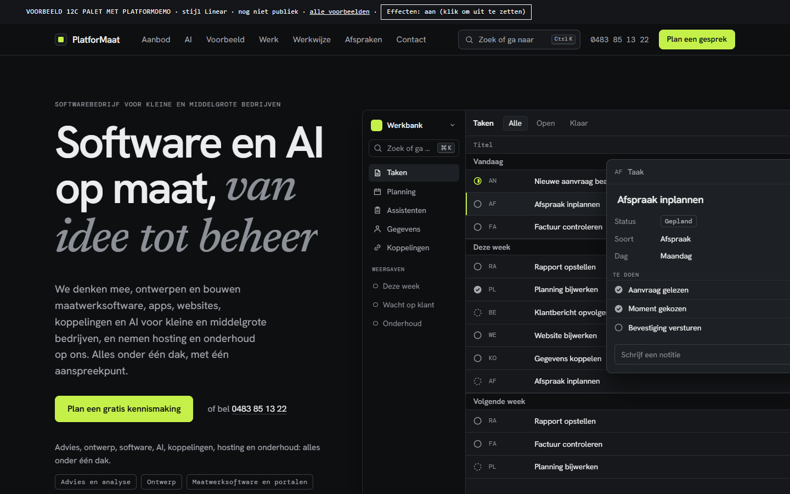
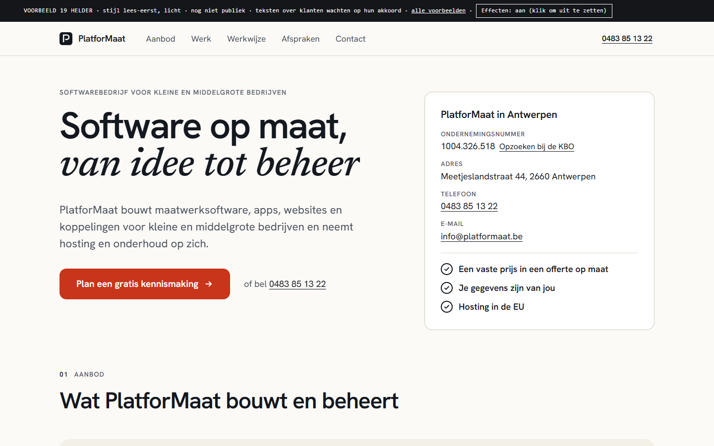
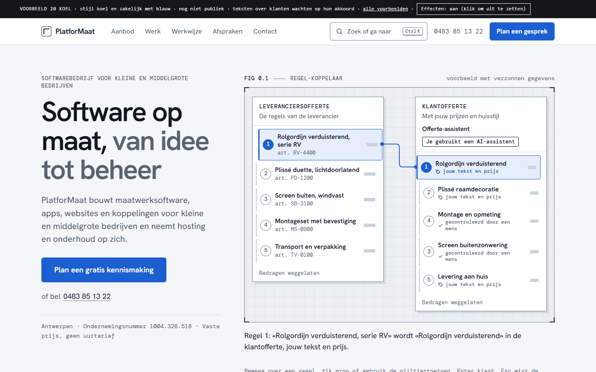
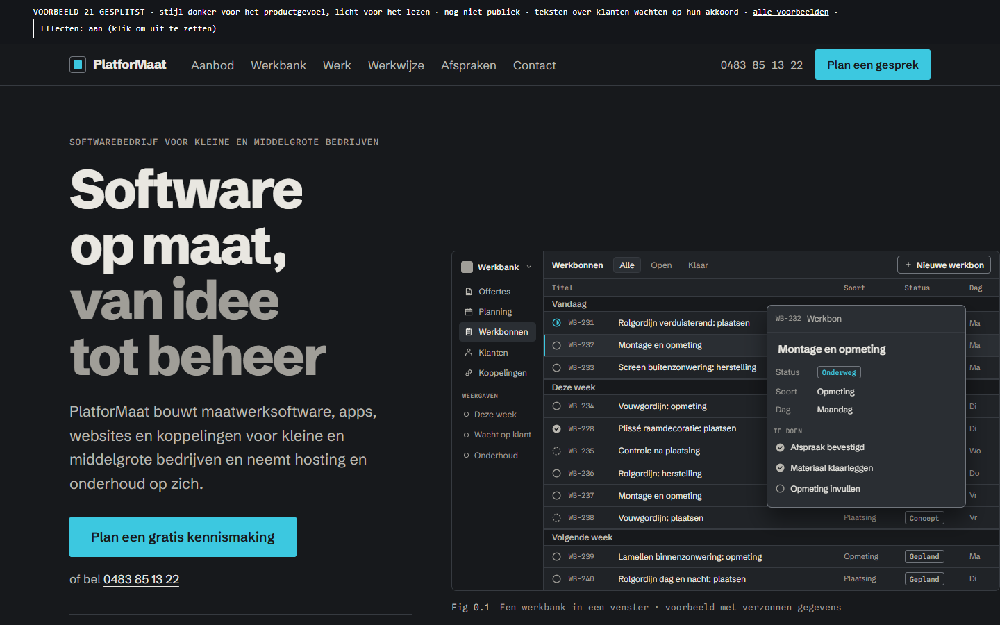
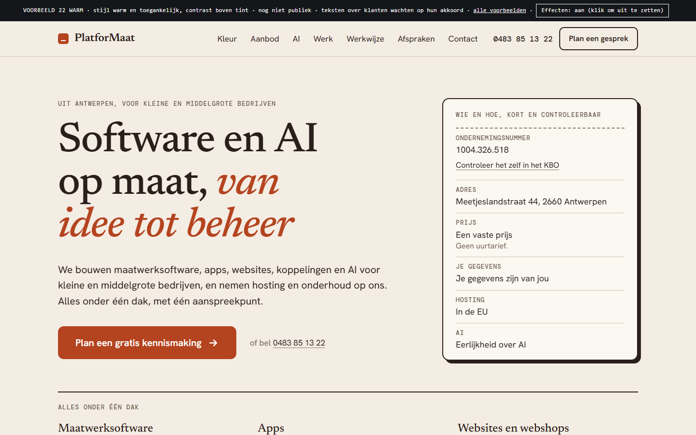
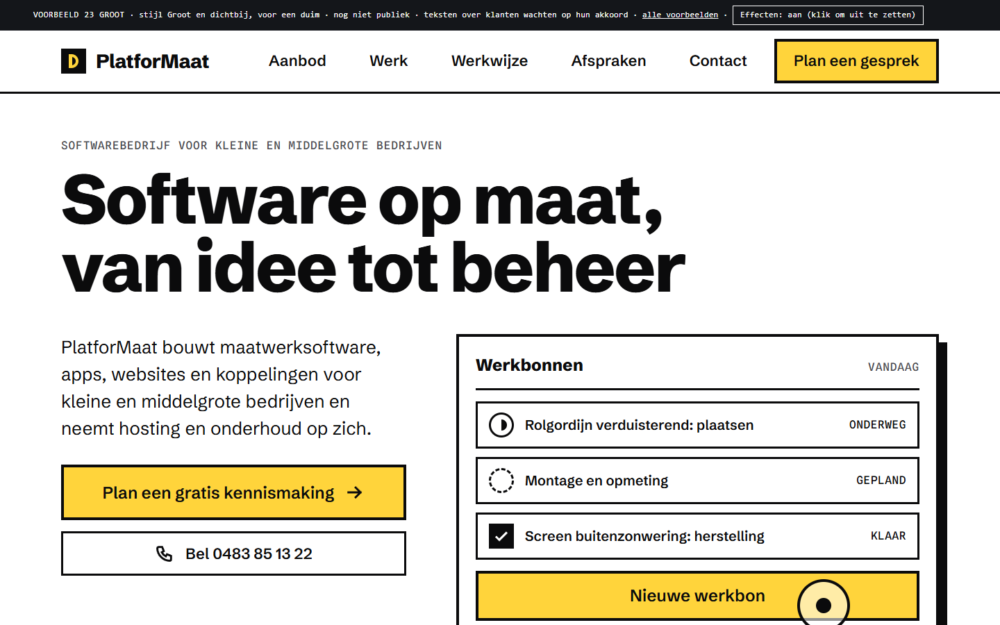
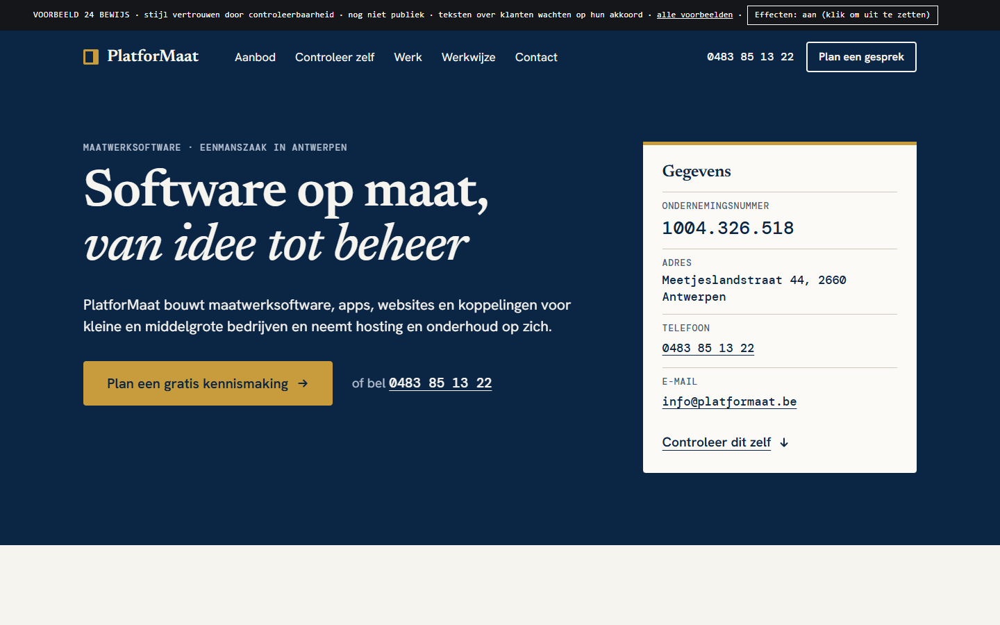
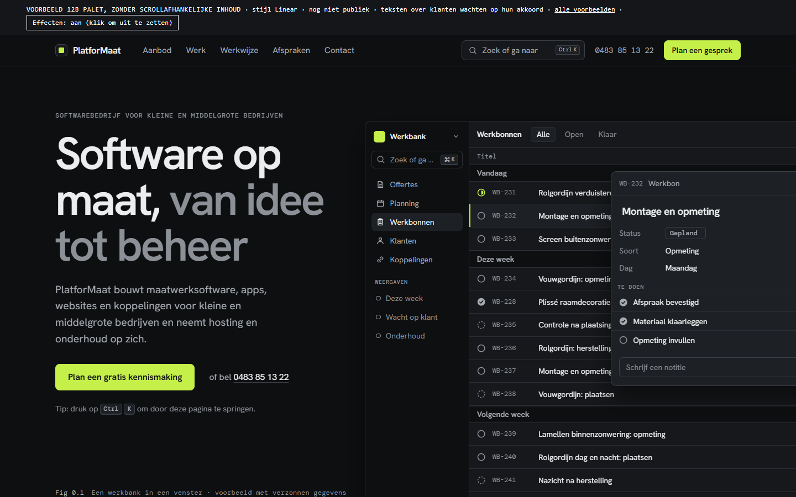

Eén partner voor al je software en AI, van idee tot beheer
Alle versies behouden hun ontwerp, maar de inhoud is nu algemeen: PlatforMaat biedt alles aan, nu in acht onderdelen met concrete voorbeelden: advies en analyse, ontwerp, maatwerksoftware en portalen, apps, websites en webshops, AI, koppelingen, automatisering en data, hosting en beveiliging, onderhoud en support. AI staat er als volwaardige dienst bij. Marketing en zichtbaarheid doen we samen met onze partner Zichtbaar Media. De hele inhoud staat er meteen en beweging zit alleen bij het laden en bij muis of tik. Elk voorbeeld heeft een eigen onderdeel om aan te raken.
Wat het onderzoek vooral zei:
- De eerste indruk is snel en bepaalt veel; eenvoud en een herkenbaar skelet scoren het best. Onderscheid zoek je in details, niet in een vreemde structuur.
- Contrast en leesbaarheid doen er meer toe dan welke kleur dan ook. «Blauw geeft vertrouwen» en «de rode knop wint» zijn mythes in hun algemene vorm; wat werkt is één accent dat opvalt tegen een rustige pagina.
- Donkere tekst op licht leest in de tests beter; donker is vooral een stijlkeuze.
- Grote, ruime tikdoelen en weinig gelijke keuzes maken een pagina makkelijker op een touchscherm.
- Vertrouwen komt uit specifieke, controleerbare inhoud en verzorgd vakwerk. Voor een kleine kmo-doelgroep in België is er geen onderzoek naar één beste kleur; testen met echte bezoekers is het eerlijke antwoord.
Concept, niet publiek bedoeld. Niet indexeren.
Nieuw: 12c, verder gebouwd op 12b
12c Platform (12b verder gebouwd) · donker met een lichte band, limoen, eigen kopletter
Je gekozen ontwerp 12b, verder gebouwd: een klein voorbeeldplatform waar je zelf op klikt (werkomgeving voor het team én klantportaal in dezelfde gegevens, met een AI-assistent die een mens laat controleren). Het aanbod is nu een overzicht met een wisselend schermvoorbeeld, de koppen hebben een eigen letter en de lijstjes met vinkjes zijn weg.

Open 12c Platform (12b verder gebouwd)19 t/m 24: de onderzoeksgedreven voorbeelden
19 Helder · warm wit, marine, vermiljoen
Kies jouw situatie: tik een zin en het passende onderdeel van het aanbod, ook AI, wordt aangeduid.
Waarom: Lees-eerst: donkere tekst op licht leest beter, 20 px tekst en korte regels, één accent voor de hoofdactie, vier keuzes in plaats van veel.

Open 19 Helder20 Koel · koel grijs en koningsblauw
Regel-koppelaar: tik of beweeg over een regel van een aanvraag en zie wat ervan gemaakt is en wie het controleerde.
Waarom: Blauw wordt vaak met «competent» geassocieerd, maar bewijst geen vertrouwen; daarom draagt hier een concrete demonstratie het vertrouwen en blauw alleen de toon.

Open 20 Koel21 Gesplitst · houtskool en licht, cyaan
Voor/na-schuif: sleep de lijn tussen een ruwe aanvraag en het afgewerkte resultaat.
Waarom: Donker geeft het tool-gevoel maar lopende tekst leest beter op licht; dus donkere kop en werkbank, lichte leespanelen, geen zuiver wit op zuiver zwart.

Open 21 Gesplitst22 Warm · warm papier en terracotta
Zie het in jouw kleur: kies een accentkleur en zie live of het contrast voldoende is.
Waarom: Er bestaat geen bewijs voor één palet per doelgroep; wat vaststaat is dat contrast telt, niet de tint. Het voorbeeld laat je dat zelf zien.

Open 22 Warm23 Groot · wit, zwart en geel
Snel contact: reusachtige tikvlakken voor bellen, plannen en mailen.
Waarom: Groot en dichtbij is makkelijker te raken (Fitts), ongeveer 9 à 10 mm voor een duim; hoog contrast en weinig gelijke keuzes voor een groot touchscherm.

Open 23 Groot24 Bewijs · marine en messing
Controleer zelf: bij elke belofte staat waar ze vastligt, en het ondernemingsnummer is te kopiëren en op te zoeken.
Waarom: Een vertrouwenssignaal telt pas als het opvalt én begrepen wordt; controleerbare, echte gegevens zijn voor een eenmanszaak de sterkste troef.

Open 24 Bewijs12b: het ontwerp dat je koos, vóór de uitbreiding
12b Palet (je gekozen ontwerp) · donker, limoen, werkbank en commandopalet
Hetzelfde ontwerp als 12, nu met algemene inhoud: alles onder één dak, AI als volwaardige dienst, alles meteen zichtbaar.

Open 12b Palet (je gekozen ontwerp)